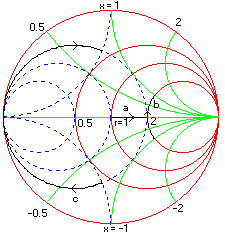

Example 1
Resistance and reactance on a Smith chart
These exercises uses basic resistance and reactance to illustrate their mapping on the chart.
a) From the Schematic window assign 0 Ohm resistor to a series slot by dragging the resistor icon from the bottom of the screen and droping it on the slot. Switch to the smith chart window and using the tool box change the resistance from 0 to 50, you will see that Z-in moves along the line at the center from left towards right which is shown as trace-a in the figure. You may vary the step size by double-clicking on the value box.
b) Assign a 50 Ohm reactance to the next series slot and vary its value from -50 to 50 ohm, Z-in moves along the circle of constant resistance as shown by trace-b.
c) Assign the above reactance in parallel and again vary its value from -50 to 50, Z-in moves along the circle of constant conductance as shown below by trace-c.
